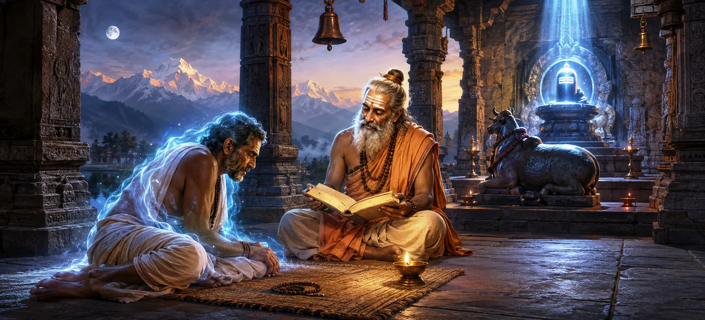

शिव पुराण को सुनने, सुनाने और अध्ययन करने के अत्यधिक लाभों को समझाने के बाद, ऋषि इन सत्यों को व्यवहार में प्रदर्शित करने के लिए एक उल्लेखनीय कहानी सुनाते हैं। यह देवराज की कहानी है, एक ऐसे व्यक्ति जिसने अपना अधिकांश जीवन सांसारिक सुखों से जुड़ा और आध्यात्मिक कर्तव्यों की उपेक्षा करते हुए बिताया। हालाँकि कई दोषों और गलतियों के बोझ से दबे होने के बावजूद, अंततः उन्हें पवित्र ज्ञान की परिवर्तनकारी शक्ति और भगवान शिव की असीम करुणा का सामना करना पड़ा।
देवराज का जन्म ऐसी परिस्थितियों में हुआ जिसने उन्हें भौतिक सफलता और आध्यात्मिक विकास दोनों के अवसर प्रदान किए। हालाँकि, धर्म और ज्ञान का अनुसरण करने के बजाय, वह तेजी से सांसारिक सुखों की ओर आकर्षित हो गया। उनका ध्यान स्थायी आध्यात्मिक मूल्यों की अपेक्षा अस्थायी भोगों पर ही केन्द्रित रहा।
जैसे-जैसे वर्ष बीतते गए, देवराज धार्मिक कर्तव्यों और आध्यात्मिक अनुशासन के प्रति उदासीन होते गए। उन्होंने आत्म-सुधार के अवसरों को नजरअंदाज कर दिया और अपने कार्यों के परिणामों पर शायद ही कभी विचार किया। उनका जीवन नैतिक उत्तरदायित्व के स्थान पर व्यक्तिगत इच्छाओं पर केन्द्रित हो गया।
हालाँकि देवराज बाहरी दृष्टिकोण से सफल दिखाई देते थे, लेकिन उनके पिछले कार्यों का प्रभाव धीरे-धीरे प्रकट होने लगा। उसका मन अशांत एवं असंतुष्ट हो गया। सुख और आराम का पीछा करने के बावजूद, उन्हें कोई स्थायी शांति नहीं मिली, क्योंकि केवल सांसारिक उपलब्धियाँ आत्मा की गहरी जरूरतों को पूरा नहीं कर सकती थीं।
हर जीवन में ऐसे क्षण होते हैं जो उसकी दिशा हमेशा के लिए बदल सकते हैं। देवराज के लिए ऐसा क्षण अप्रत्याशित रूप से आया। अपनी योजना से परे परिस्थितियों में, वह पवित्र लोगों के संपर्क में आये जो पवित्र शिक्षाओं पर चर्चा करने और भगवान शिव की महिमा करने में लगे हुए थे।
सबसे पहले, देवराज ने बिना किसी विशेष आध्यात्मिक इरादे के सुना। फिर भी शिव पुराण के पवित्र शब्दों में असाधारण शक्ति है। यहां तक कि एक आकस्मिक सुनवाई भी हृदय में परिवर्तन के बीज बो सकती है। जैसे-जैसे उन्होंने दिव्य आख्यानों और उपदेशों को सुना, उनके भीतर सूक्ष्म परिवर्तन होने लगे।
प्रत्येक क्रिया अंततः अपना अनुरूप परिणाम उत्पन्न करती है।
कोई भी आत्मा भगवान शिव की कृपा की पहुंच से परे नहीं है।
पवित्र शिक्षाएँ जीवन बदलने की शक्ति रखती हैं।
जैसे-जैसे देवराज पवित्र चर्चा सुनते रहे, उनके हृदय में कुछ हलचल होने लगी। शिव पुराण की शिक्षाओं ने उन्हें अपने पिछले कार्यों और अपने जीवन की दिशा पर विचार करने के लिए प्रेरित किया। कई वर्षों में पहली बार, उन्हें अपनी गलतियों के लिए वास्तविक पश्चाताप और एक उच्च उद्देश्य की तलाश की इच्छा का अनुभव हुआ।
संत समझाते हैं कि पवित्र ज्ञान के साथ एक साक्षात्कार किसी व्यक्ति की नियति को बदल सकता है। जिस प्रकार एक चिंगारी बड़ी आग को प्रज्वलित कर सकती है, उसी प्रकार दिव्य सत्य के संपर्क का एक क्षण सुप्त आध्यात्मिकता को जगा सकता है। देवराज का जीवन बल से नहीं, बल्कि पवित्र शिक्षाओं के शांत प्रभाव से बदलना शुरू हुआ।
देवराज की कहानी उन सभी को आशा प्रदान करती है जो पिछली गलतियों से बोझ महसूस करते हैं। भगवान शिव की करुणा असीम है, और ईमानदारी से परिवर्तन हमेशा संभव है। चाहे कोई व्यक्ति कितना भी भटक गया हो, भक्ति और पवित्र ज्ञान के माध्यम से धर्म की ओर लौटने का मार्ग खुला रहता है।
यह अध्याय सिखाता है कि कोई भी व्यक्ति पिछली गलतियों से स्थायी रूप से परिभाषित नहीं होता है। जैसे ही कोई व्यक्ति दिव्य ज्ञान और सच्ची भक्ति की ओर मुड़ता है, परिवर्तन शुरू हो जाता है। भगवान शिव की कृपा आध्यात्मिक जागृति की दिशा में एक भी कदम उठाने के इच्छुक प्रत्येक आत्मा की धैर्यपूर्वक प्रतीक्षा करती है।
हालाँकि देवराज अभी तक एक समर्पित अनुयायी नहीं बने थे, लेकिन उनके दिल में भक्ति के बीज पहले ही पड़ चुके थे। उन्होंने जो शिक्षाएँ सुनीं, वे उनके दिमाग में गूंजती रहीं, जिससे उन्हें अपनी प्राथमिकताओं पर पुनर्विचार करने और अधिक सार्थक जीवन की तलाश करने के लिए प्रोत्साहित किया गया।
सच्चा परिवर्तन बाहरी क्रियाओं में दिखाई देने से बहुत पहले ही हृदय के भीतर शुरू हो जाता है। जैसे-जैसे देवराज ने पवित्र शिक्षाओं पर विचार किया, उनके विचार धीरे-धीरे अधिक विचारशील और ईमानदार हो गए। आध्यात्मिक नवीनीकरण की प्रक्रिया चुपचाप शुरू हो गई थी।
ऋषि बताते हैं कि देवराज की यात्रा अभी शुरू ही हुई थी। महान पाठ और अधिक गहन आध्यात्मिक अनुभव उनका इंतजार कर रहे थे। विशेष रूप से, उसे जल्द ही भगवान शिव के पवित्र नाम में निहित असाधारण शक्ति के बारे में पता चल जाएगा - एक ऐसी शक्ति जो गंभीर पापों को भी नष्ट करने में सक्षम है।
"ईश्वरीय ज्ञान का एक क्षण पूरे जीवनकाल की दिशा बदल सकता है।"
पवित्र शिक्षाओं के माध्यम से देवराज के परिवर्तन की शुरुआत को देखने के बाद, भगवान शिव के पवित्र नाम की असाधारण शक्ति की खोज जारी रखें और यह सबसे बोझिल आत्मा को भी कैसे शुद्ध करता है।